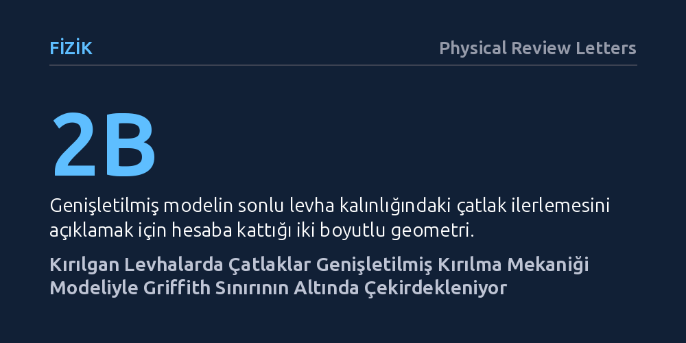

FIZIK · Physical Review Letters · 2026-09-08
Araştırmacılar, sonlu kalınlıktaki levhalarda kırılgan çekme çatlaklarının nasıl yayıldığını iki boyutlu geometriyi hesaba katan genişletilmiş bir modelle inceledi. Deneyler, çatlakların klasik Griffith uzunluğunun altındaki boyutlarda ve kritik bir gerilme eşiğinde çekirdeklendiğini doğruladı.
Malzemelerin parçalanmadan önce geçirdiği sessiz sünme ve çatlak başlangıcı evresinin klasik sınırların altında başladığını göstererek hem malzeme dayanımını hem de sismik kırılmaları anlamak için daha hassas bir çerçeve sunar.

Bir cam levha veya sert bir katı malzeme çekme gerilimine maruz kaldığında aniden ikiye ayrılabilir. Yüzyılı aşkın süredir malzeme bilimciler ve fizikçiler, bu tür kırılgan malzemelerdeki çatlakların ne zaman yayılacağını tahmin etmek için Doğrusal Elastik Kırılma Mekaniği (LEFM) ve klasik Griffith teorisine başvuruyordu. Klasik Griffith yaklaşımına göre, bir çatlağın hızla ilerleyip malzemeyi koparabilmesi için belirli bir kritik uzunluğu (Griffith boyutu) aşması gerekir; bu eşiğin altındaki çatlakların ise kararlı kalarak büyümemesi beklenir.
Ne var ki gerçek dünyadaki malzemeler sonsuz büyüklükte bloklar değildir; belirli bir kalınlığa ve sonlu boyutlara sahiptir. Malzemelerde çatlağın aniden fırlamasından önce mikro ölçekte nasıl başladığı, yani nasıl çekirdeklendiği ve bu esnada nasıl bir yavaş sünme evresi geçirdiği uzun süredir teorik bir boşluk barındırıyordu. Bu başlangıç sürecinin tam olarak modellenememesi, hem mühendislik yapılarının yorulma ömrünü tahmin etmeyi zorlaştırıyor hem de benzer fiziksel kurallarla çalışan fay hatlarındaki deprem başlangıçlarının anlaşılmasını kısıtlıyordu.
Kudüs İbrani Üniversitesi'nden Jay Fineberg ve çalışma arkadaşları, klasik yaklaşımın iki boyutlu geometrik kısıtlarını aşmak amacıyla doğrusal elastik kırılma mekaniğini genişletti. Geliştirilen yeni teorik çerçeve, sonlu plaka kalınlığına ($W$) sahip levhalarda ilerleyen çekme çatlaklarının iki boyutlu geometrisini doğrudan denklemlere dahil ediyor. Bu sayede model, çatlağın yalnızca hızlı ilerleme evresini değil, öncesindeki çekirdeklenme ve yavaş sünme dinamiklerini de tek bir analitik yapıda ele alabiliyor.
Araştırmacılar bu yeni teorik modeli doğrulamak için kontrollü laboratuvar deneyleri tasarladı. Belirli kalınlıklara sahip kırılgan levhalar kontrollü çekme gerilimine tabi tutularak çatlağın oluştuğu ilk andan dinamik hızlara ulaştığı ana kadarki davranışı yüksek hassasiyetli ölçüm sistemleriyle kaydedildi. Deneylerden elde edilen gerilme eşikleri ve çatlak boyutu verileri, genişletilmiş modelin öngörüleriyle karşılaştırılarak teorinin geçerliliği sınandı.
Elde edilen deneysel bulgular, yeni genişletilmiş modelin öngörülerini tam olarak doğruladı. Araştırmacılar, çatlakların klasik Griffith uzunluğundan daha küçük boyutlarda ve belirli bir kritik gerilme eşiğinde çekirdeklendiğini deneysel olarak gösterdi. Başka bir deyişle malzemenin kırılması, klasik teorinin beklediği kritik çatlak boyutuna ulaşılmadan çok önce, sonlu levha geometrisi ve yerel gerilme yoğunlaşmalarının etkisiyle tetiklenebiliyor.
Deneyler ayrıca çatlak çekirdeklenmesi, dinamik fırlama öncesindeki yavaş sünme evresi ve ardından gelen hızlı dinamik kırılmanın birbirinden kopuk süreçler olmadığını ortaya koydu. Tüm bu evrelerin, levha kalınlığını hesaba katan genişletilmiş tek bir elastik kırılma mekaniği modeli tarafından kesintisiz biçimde tarif edilebildiği kanıtlandı.
Bu çalışma, kırılgan katıların parçalanma sürecine ilişkin temel kabullerimizi daha gerçekçi bir zemine oturtuyor. Malzemenin kopmasından önce gerçekleşen sinsi sünme hareketinin ve çatlak başlangıcının matematiksel olarak öngörülebilir olması, yapısal güvenlik ve malzeme ömrü hesaplamalarında klasik modellerin gözden kaçırdığı sınırları daha net belirleme imkânı sunuyor.
Aynı zamanda çekme çatlağı mekaniği ile fay hatlarındaki sürtünme kararsızlıkları arasındaki derin fiziksel benzerlik göz önüne alındığında, bu bulgular depremlerin çekirdeklenme evresine dair fiziksel anlayışa da katkı sağlıyor. Kırılmanın en erken evrelerinin doğru modellenmesi, yıkıcı kırılmalar öncesinde yaşanan mikro ölçekli deformasyonların daha sağlıklı yorumlanmasına zemin hazırlıyor.